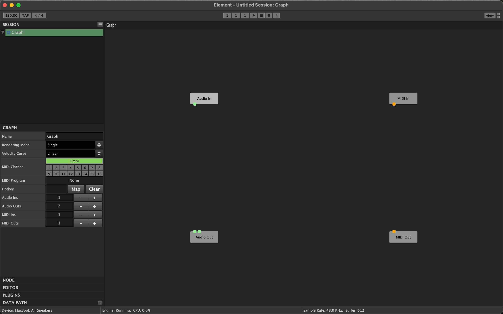
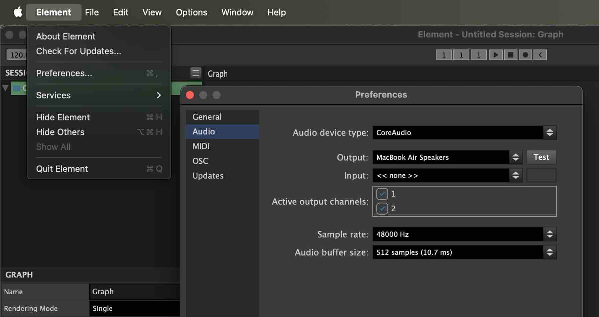
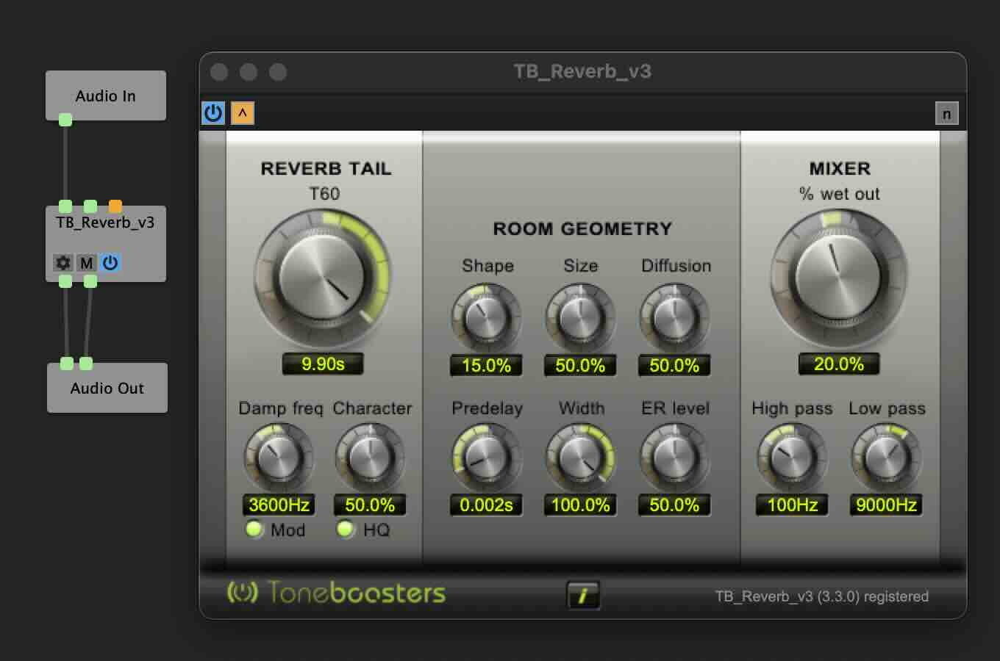
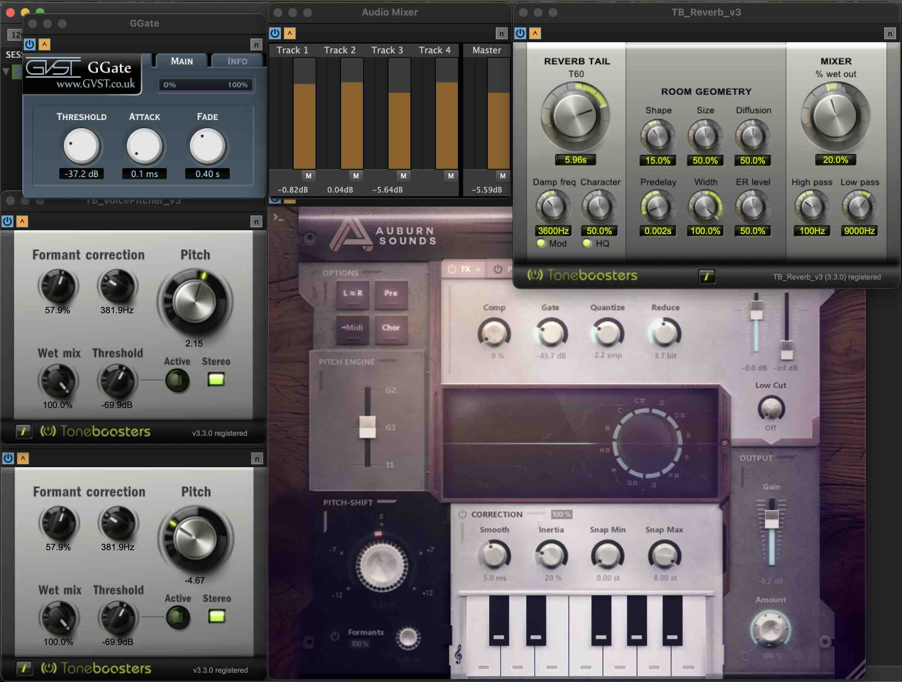

Live Voice Changer
One of the things I love about Dungeons and Dragons (and TTRPGs in general) is the creativity they foster at and away from the table. My wife started listening to a Dimension 20 campaign recently and asked me would it be possible to do the cool voice changing stuff they add to those shows, but live at the table. Seeing this as another fun way to kill some time and use my skills in virtual instruments I figured I’d give it a shot. Thankfully everything came together without much issue and I’m happy to say my players loved it (so much so they forced me to put this how-to together so they could steal it for themselves). Here is a quick clip of me using this voice changer to portray the Wooden Stag spirit known as He who Hungers after the party chased him into a dark cornfield (totally thinking of the consequences of their actions). I am playing a spooky haunted forest music track from spotify in the background.
Overview
To achieve this I am using a series of VSTs (Virtual Studio Technology) which modify an audio input. VSTs generally have a specific task, so some can add reverb, others can function as a noise gate. These are typically used in larger music production softwares such as DAWs, but for my purposes I used a standalone VST host called Element. In Element you can import and use any number of VSTs. I’ll go through now and list all of the VSTs I used in this clip as well as where you can find them. As of October 2025 everything on this list was freely available and working.
VST Host
-
Element
This can be used to play and connect any number of virtual instruments (VST)
https://kushview.net/element/
VSTs Used
-
ToneBoosters
ToneBoosters makes tons of VSTs. A while back they released their old versions for free, follow this link and scroll all the way to the bottom to this heading and download. Go ahead and install all of them, for this project I only used the Voice Pitcher, Reverb, and the Compressor. The correct links are labelled as Legacy (v3) plug-in installer (64 bits)
https://www.toneboosters.com/changelog.html -
Graillon Voice Changer (Free version)
This one can give you a cool distorted robot sound to your voice
https://www.auburnsounds.com/products/Graillon.html -
GGate
gvst has a bunch of free ones, I just used their Gate, but check out their list if there is anything else you’d like to try
https://gvst.uk/Downloads/GGate -
Audio Mixer
This one should be included in the VSTs Element comes installed with. No need to download this one.
Hardware
-
Computer
I am using a Macbook Air M4 (everything here should have Windows counterparts)
-
Mic
Here is the gooseneck mic I was using. Can’t speak to its durability as I just bought it this week, but it feels nice. It is listed as Movo GM-5 Professional 18-inch Gooseneck Microphone
https://a.co/d/8qnbMR9 -
Speakers
These were just old computer speakers, use whatever you like
The Setup
-
Open up Element, you should see a blank canvas where you can add VSTs.
 -
Testing out your Mic and Speakers
In Element each module has Inputs and Outputs. Green squares represent audio, Orange represents MIDI, for this tutorial I will just talk about Audio. Any square on the bottom of a module is an output, squares on the top of a module are inputs. To connect an output of one module to the input of another you can click on the output square and drag to an input square.
Connect the "Audio In" module to the "Audio Out" module. Check your Audio Preferences in Element to ensure you have your mic and speakers selected correctly. Once your mic and speakers are selected try talking, you should hear your voice repeated back to you.
At any time you can right click the "Audio In" module and disable it so you don't continuously hear yourself.
 -
Add your VSTs
In the VSTs Used section above the VSTs will either download as an installer or an individual .vst file. If it was an installer go ahead and run that installer. If it is a plain .vst file you can drag and drop it into the empty Element canvas.
If you do not see your VSTs after running their installer you can try to find them by clicking View in Element and going to Plugin Manager. There you can click the Scan button and that should pick them up.
Once you have installed your VSTs you can add them to the canvas by right clicking and choosing the VST you want from the plugin section
-
Testing a VST
Right click your canvas and add choose TB_Reverb_v3 from your Plugins list.
Connect "Audio In" -> "TB_Reverb_v3" -> "Audio Out" as shown here.
If all went right if you talk you should hear your voice with some nice reverb. To see the Reverb options you can double click on the "TB_Reverb_v3" module.

And with that you have made your first VST voice changer setup! Congrats, everything from here on out uses these same ideas just with a little more complex VST module chain.
Here is a picture of the voice for He who Hungers that you heard in the clip earlier.
I am passing the audio input through a noise gate so it only outputs noise above a certain volume to cut out background noise. After that it goes into three pitch shifters to spread out the pitch of my voice. These all get put into a mixer to adjust the volume of each pitched voice. I then pass that to the reverb and a compressor.

And here are all of those modules expanded out so you can see the settings I used. Only one not here is the compressor as I ended up not needing it.
If you followed along you too can impress your friends with a booming, ethereal, otherworldly countenance. If you want to share the magic you can point them here to see how it is done.